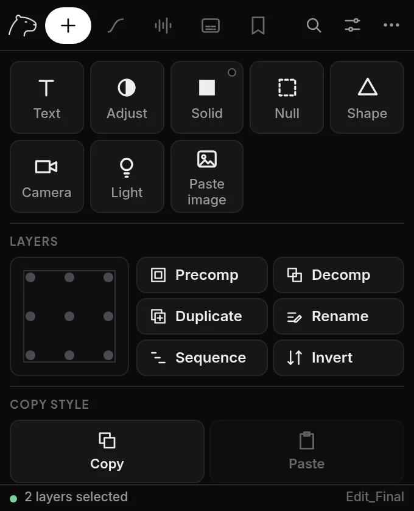

Create
New layers without going through menus and dialogs.
- Select a layer in your timeline (optional).
- Click a tile: Text, Adjust, Solid, Null, Shape, Camera or Light.
- The new layer lands right above the selected one, with the same start and end.
Options (sliders icon)
- Name
- Give new layers a name instead of the default.
- Color
- Color used for solids and shapes.
- Match selected layer
- Same timing and position in the stack as the selection. Turn off to use the full comp.
TipA null is the quickest way to animate several layers together: create it, then parent the layers to it.